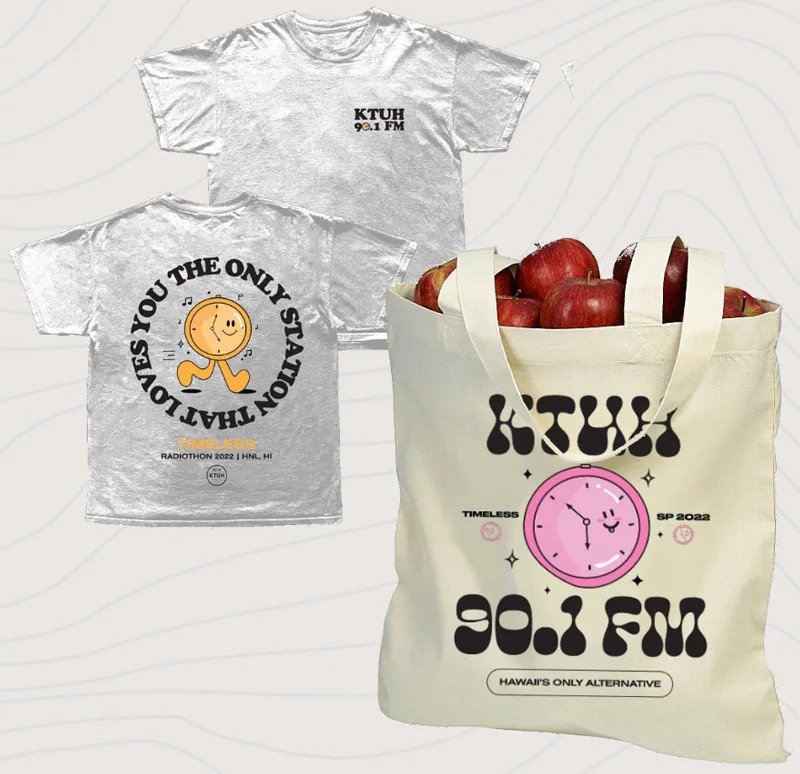

KTUH "TIMELESS" RADIOTHON
CURRENT RAISED: $ xxxx.xx
DONATE NOW
ABOUT
KTUH is a student-run non-profit radio station at the University of Hawaii at Manoa. With semesterly student fees being the only source of funding (which is used for the necessities to keep us running), we host a bi-annual Radiothon to raise the extra funds needed to upgrade our facilities and programs. Thanks to the support from our viewers, we are able to raise money twice a year to serve various purposes, from Live Room renovations to providing scholarships for our student DJs. At the end of the day, KTUH would not be able to continuously progress without radiothon and the support from our valued listeners.
THEME
This spring our radiothon theme "Timeless", captures our desire to create timeless opportunities for students through enowing, replenishing, and supplementing our scholarship fund. Thanks to your donations during our last spring radiothon our scholarship fund currently stands at $45,000. Not only will we be playing timeless music for the entire week, but we will also be awarding our first scholarships on air!
GOALS
Here are the goals we are looking to accomplish through the funds raised this spring:
Goal #1 - $5,000: Endow
Raise the $5,000 necessary to endow our scholarship fund so that the account can become self-sufficient.
Goal #2 - $3,000: Replenish
Raise the amount to replenish the funds that will be awarded during our donation drive.
Goal #3 - Supplement
Additional funds raised will go towards supplementing our scholarship account.
PREMIUMS
As a token of our appreciation we offer premium packages to those who donate during our radiothon. This semester, we are offering the following premiums:
Predrive
Available March 21st - April 1st
"Timeless" Sweater (Donations of $60+)
Radiothon Packages
Available March 1st - April 9th
Century Package (Donations of $75+)

Millenium Package (Donations of $150+)